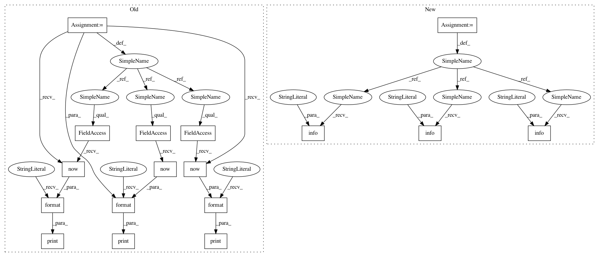

c957b240a42675d49f9c2d9a65f2f548b60ba99b,src/pyscenic/scenic.py,,find_motifs,#Any#,85
Before Change
else GeneSignature.from_gmt(args.module_fname.name, args.nomenclature)
nomenclature = modules[0].nomenclature
print("{} - Loading databases.".format(datetime.datetime.now()))
def name(fname):
return os.path.basename(fname).split(".")[0]
dbs = [open(fname=fname, name=name(fname), nomenclature=nomenclature) for fname in args.database_fname]
print("{} - Calculating regulomes.".format(datetime.datetime.now()))
motif_annotations_fname = args.annotations_fname.name
with ProgressBar() if args.mode == "dask_multiprocessing" else NoProgressBar():
df = motifs(dbs, modules, motif_annotations_fname,
rank_threshold=args.rank_threshold,
auc_threshold=args.auc_threshold,
nes_threshold=args.nes_threshold,
client_or_address=args.mode,
module_chunksize=args.chunk_size,
num_workers=args.num_workers)
print("{} - Writing results to file.".format(datetime.datetime.now()))
df.to_csv(args.output)
def prune_targets(args):
After Change
def find_motifs(args):
LOGGER.info("{} - Loading modules.")
// Loading from YAML is extremely slow. Therefore this is a potential performance improvement.
// Potential improvements are switching to JSON or to use a CLoader:
// https://stackoverflow.com/questions/27743711/can-i-speedup-yaml
modules = load_from_yaml(args.module_fname.name) if args.module_fname.name.lower().endswith(".gmt") \
else GeneSignature.from_gmt(args.module_fname.name, args.nomenclature)
nomenclature = modules[0].nomenclature
LOGGER.info("{} - Loading databases.")
def name(fname):
return os.path.basename(fname).split(".")[0]
dbs = [open(fname=fname, name=name(fname), nomenclature=nomenclature) for fname in args.database_fname]
LOGGER.info("{} - Calculating regulomes.")
motif_annotations_fname = args.annotations_fname.name
with ProgressBar() if args.mode == "dask_multiprocessing" else NoProgressBar():
df = find_features(dbs, modules, motif_annotations_fname,
rank_threshold=args.rank_threshold,
auc_threshold=args.auc_threshold,
nes_threshold=args.nes_threshold,
client_or_address=args.mode,
module_chunksize=args.chunk_size,
num_workers=args.num_workers)
LOGGER.info("{} - Writing results to file.")
df.to_csv(args.output)
def prune_targets(args):
In pattern: SUPERPATTERN
Frequency: 3
Non-data size: 17
Instances
Project Name: aertslab/pySCENIC
Commit Name: c957b240a42675d49f9c2d9a65f2f548b60ba99b
Time: 2018-03-06
Author: vandesande.bram@gmail.com
File Name: src/pyscenic/scenic.py
Class Name:
Method Name: find_motifs
Project Name: aertslab/pySCENIC
Commit Name: c957b240a42675d49f9c2d9a65f2f548b60ba99b
Time: 2018-03-06
Author: vandesande.bram@gmail.com
File Name: src/pyscenic/scenic.py
Class Name:
Method Name: find_modules
Project Name: aertslab/pySCENIC
Commit Name: c957b240a42675d49f9c2d9a65f2f548b60ba99b
Time: 2018-03-06
Author: vandesande.bram@gmail.com
File Name: src/pyscenic/scenic.py
Class Name:
Method Name: find_motifs
Project Name: aertslab/pySCENIC
Commit Name: c957b240a42675d49f9c2d9a65f2f548b60ba99b
Time: 2018-03-06
Author: vandesande.bram@gmail.com
File Name: src/pyscenic/scenic.py
Class Name:
Method Name: aucell